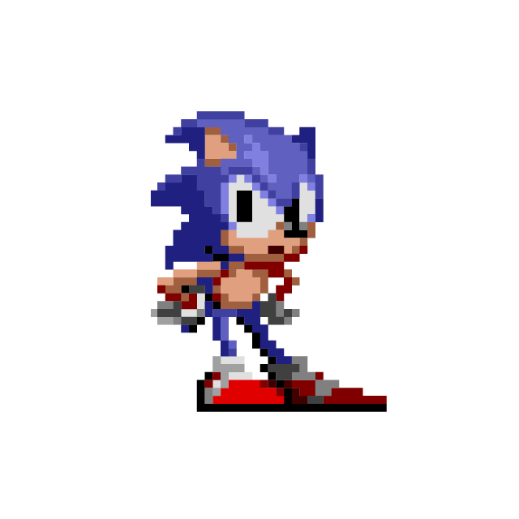
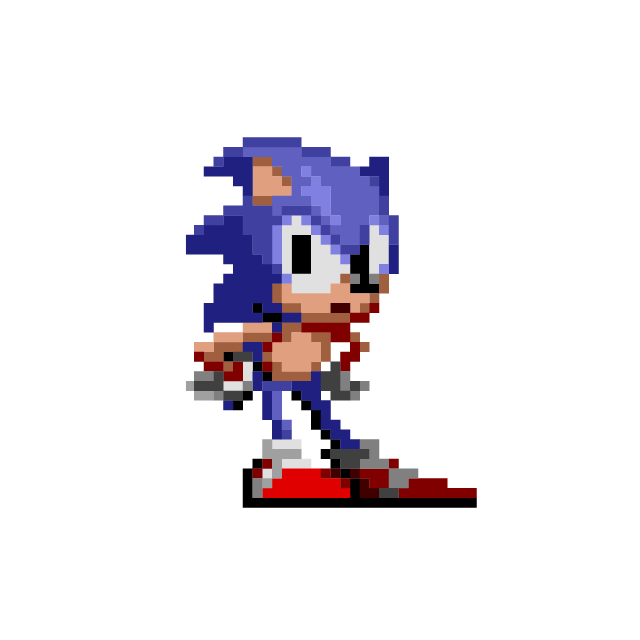

Sonic the hedgehog

Personaje creado en 1991 por sega para hacer competencia a mario. Sonic the Hedgehog, fue creado en 1991, para competir con los videojuegos de Nintendo: y Mario, reemplazando a su antigua mascota Alex Kidd. La mayoría de los juegos de la franquicia son desarrollados por Sonic Team. Sus juegos han vendido más de 80 millones de copias en 2011.
Sonic the hedgehog 2

Sonic the Hedgehog 2 es un videojuego de plataformas desarrollado por Sega Technical Institute y Sonic Team, y publicado en noviembre de 1992 para Mega Drive protagonizado por Sonic y un nuevo aliado que se presenta por primera vez, Miles «Tails» Prower
Sonic the hedgehog 3

es un videojuego de plataformas de la saga Sonic the Hedgehog creado por el Sonic Team y publicado por Sega. Se lanzó como una secuela de Sonic the Hedgehog 2. La continuación, Sonic & Knuckles, se lanzó más tarde en el mismo año, que retoma la historia directamente después del final de Sonic the Hedgehog 3.
Desarrollador/es
Sonic Team
Sega Technical Institute
Distribuidor/es
Sega
Diseñador/es
Takashi Thomas Yuda (diseñador de personajes)
Hirokazu Yasuhara (diseñador líder)
Yuji Naka (programador)
Sonic y knucles

Sonic & Knuckles es un videojuego de plataformas de la serie de Sonic the Hedgehog, hecho por Sega, originalmente para Mega Drive, y lanzado al mercado en 1994 protagonizado por Sonic el Erizo. Es la continuación inmediata de Sonic the Hedgehog 3, que había salido a la venta anteriormente, en el mismo año. Wikipedia Fecha de estreno inicial: 18 de octubre de 1994 Serie: Sonic the Hedgehog Modo: Videojuego de un jugador Distribuidor: Sega Plataformas: Mega Drive, Xbox 360, Microsoft Windows, Sega Saturn, Wii Diseñadores: Yūji Naka, Takashi Iizuka, Hirokazu Yasuhara, Takashi Thomas Yuda, Hisayoshi Yoshida Desarrolladores: Sega, Sonic Team, Sega Technical Institute